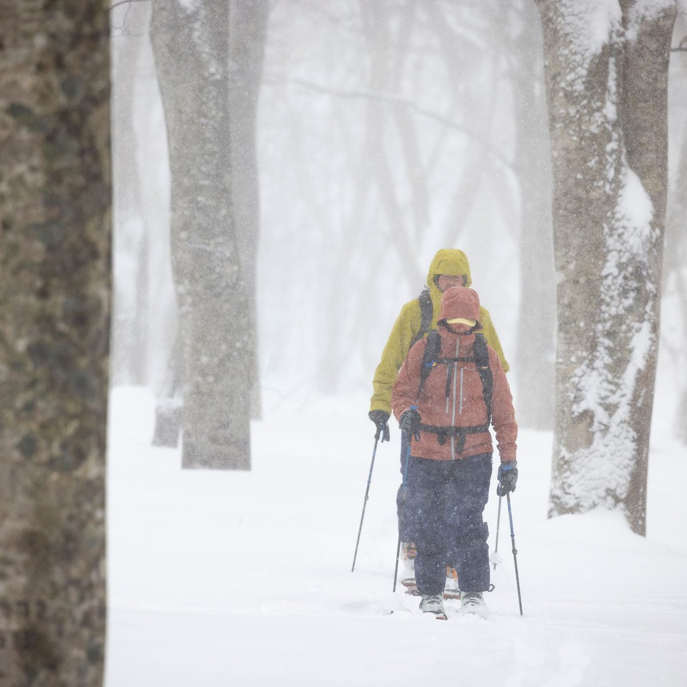
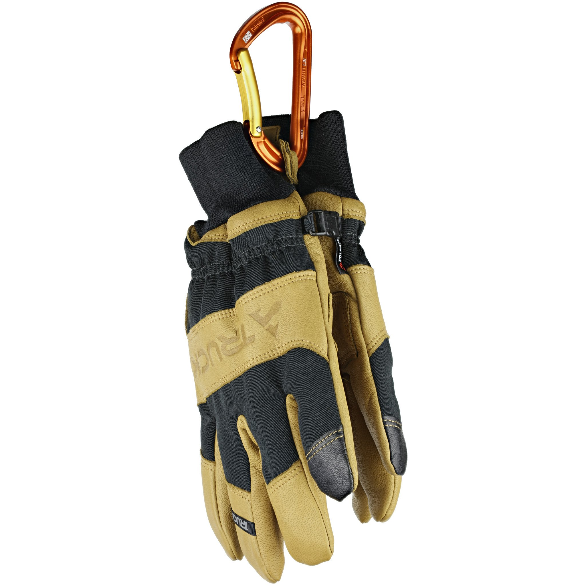

The real benefits of a leather ski glove, and what it actually does between the lift line and the last run.
Before arguing materials, get clear on the job. Four things decide whether a glove works on the hill. Leather has an answer for each.
Moving air steals heat faster than cold air alone.
Poles, straps and zippers all in the cold.
Dry hands are warm hands.
Fine control keeps blood flowing.
The benefits aren't marketing. They come from how a hide is built. Tap a layer to see what it does for your hand.
The grain pattern gives a leather palm a slight tooth. Poles, straps and zipper pulls stay where you put them, without a death grip.
The outer layer of the hide is its tightest: fine, closely packed fibers. That density is what makes leather such a good wind blocker, without a thick shell on top.
Under the grain, thicker fibers interlace in a loose, three-dimensional weave. Air and moisture can work through it, and the weave lets the leather flex and shape to your hand as it breaks in.
The fibers are woven through the whole thickness of the hide, so the toughness is in the material itself, not in a layer bonded on top. That's why it takes a season of edges and rope tows.
Leather is a dense, tight-fibered material, so wind has a hard time getting through it. That matters most on the chairlift, where you're sitting still at speed and the cold is moving fast.
The part people miss: you get that wind block without piling on a thick, puffy shell. Less bulk between you and the pole means better feel.

A good leather palm has natural tack. It holds a ski pole, a rope tow or a zipper pull without feeling like you're clamping down to keep control.
Best case is cold, dry snow, which is where most days start. A relaxed grip means less fatigue by the afternoon.
Hands sweat, even in the cold, especially on a hike to the next run or when the sun comes out. Leather is a natural material that breathes better than many synthetic shells, so moisture has somewhere to go.
Dry hands stay warmer. That's the whole game.
Leather breaks in. It softens and conforms to the shape of your hand, which gives you better feel for straps, buckles and zippers.
That fit isn't only about comfort. A glove that doesn't squeeze or bunch keeps blood moving to your fingers, and moving blood is warmth.
Ski days are rough on gloves: edges, ice, rope tows, chairlift bars. Leather stands up to it, and with simple care a good pair lasts multiple seasons.
Spread the cost across every day you wear them, and the glove that costs more up front often costs less over time.

Leather has a reputation. Some of it is earned, some of it is out of date.
Partly trueUntreated leather isn't waterproof, and no honest glove maker will tell you otherwise. Treat it with a proper leather protector, dry it slowly after wet days, and know your conditions. For dry-to-damp cold, it performs. For slush, plan accordingly.
OutdatedNew leather can feel firm for the first few outings. Then it breaks in and shapes to your hand, which is exactly what you want.
MisunderstoodWarmth comes mostly from insulation and liner. Leather is the shell: it blocks wind, breathes, and lets that insulation do its work.
Not reallyLet it dry naturally, away from direct heat. Condition it now and then. Re-treat it when water stops beading. That's about it.
We choose leather because it does the job on the mountain, then keeps doing it. See the current lineup.
One photo, one card. We'll do the measuring.
The fast, friendly way to get day-one fit.
Dry, condition, re-treat. That's it.